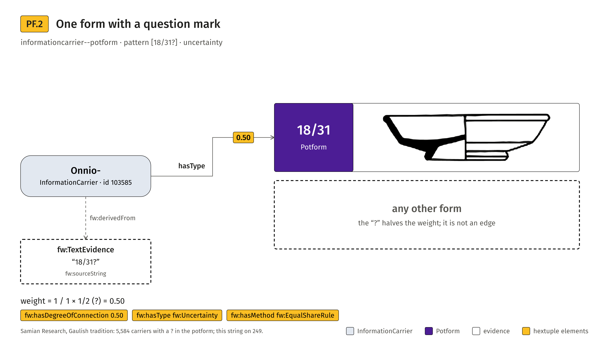
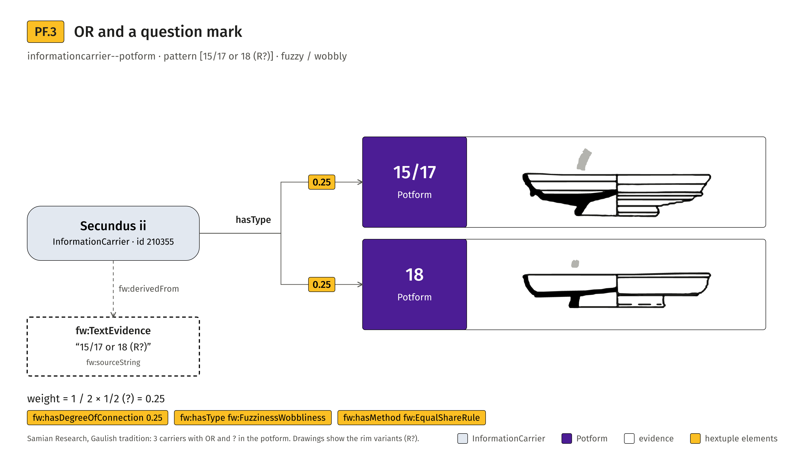
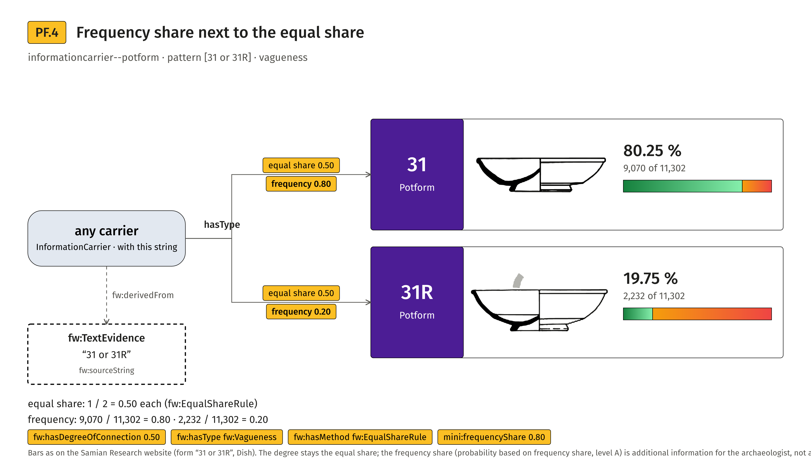

Potform
informationcarrier--potform: vagueness (OR), uncertainty (?), fuzziness-wobbliness, and observed frequency. Drawings are the profile forms of the Samian Research website, redrawn.

PF.1Several forms with OR
informationcarrier--potform; string 15/17 or 18 or 18/31 (Secundus v, id 156521); weight 0.33 per statement, fw:Vagueness, fw:EqualShareRule. Data: Samian Research; figure CC BY 4.0.


PF.2One form with a question mark
informationcarrier--potform; string 18/31? (Onnio-, id 103585); weight 0.50 per statement, fw:Uncertainty, fw:EqualShareRule. Data: Samian Research; figure CC BY 4.0.



PF.3OR and a question mark
informationcarrier--potform; string 15/17 or 18 (R?) (Secundus ii, id 210355); weight 0.25 per statement, fw:FuzzinessWobbliness, fw:EqualShareRule. Data: Samian Research; figure CC BY 4.0.



PF.4Frequency share next to the equal share
informationcarrier--potform; string 31 or 31R (any carrier); weight 0.50 per statement, fw:Vagueness, fw:EqualShareRule. Data: Samian Research; figure CC BY 4.0.